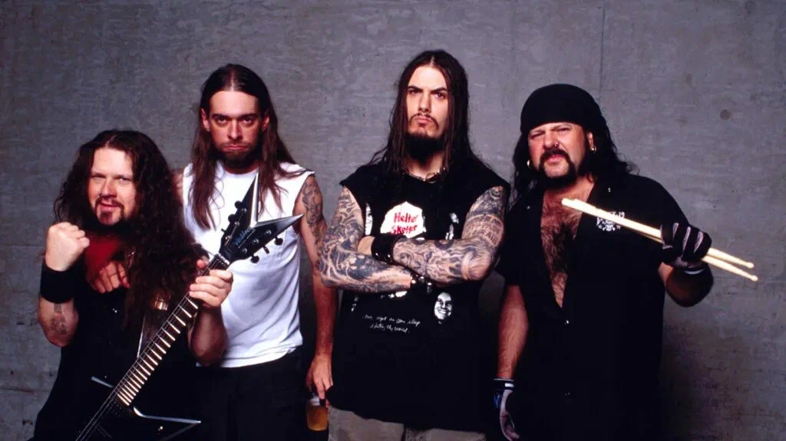
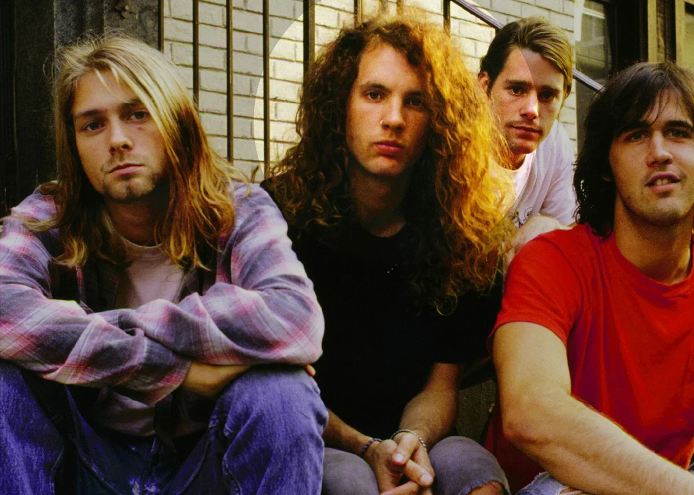

"Pantera"

Pantera — американская рок-группа из Арлингтона, штат Техас, образованная в 1981 году братьями Эбботтами (гитарист Даймбэг Даррелл и барабанщик Винни Пол).
Самый известный состав группы состоял из братьев Эбботтов, а также Рекса Брауна и Фила Ансельмо, которые присоединились к ней в 1982 и 1986 годах соответственно.
"Nirvana"

Американская рок-группа, созданная вокалистом и гитаристом Куртом Кобейном и басистом Кристом Новоселичем в Абердине, штат Вашингтон, в 1987 году.
В 1989 году Nirvana выпустила на независимом лейбле Sub Pop дебютный альбом Bleach. После подписания контракта с крупным лейблом DGC Records группа приобрела неожиданный успех с песней «Smells Like Teen Spirit» из своего второго альбома Nevermind, выпущенного в 1991 году.
"Metallica"

Metallica — американская метал-группа, созданная вокалистом и гитаристом Джеймсом Хэтфилдом и барабанщиком Ларсом Ульрихом в Лос-Анджелесе, штат Калифорния, в 1981 году.
Современный состав группы: Хэтфилд (ведущий вокал, ритм-гитара), Кирк Хэмметт (соло-гитара, бэк-вокал), Роберт Трухильо (бас-гитара, бэк-вокал).
Бывшие участники: Дэйв Мастейн, Рон Макговни, Клифф Бёртон, Джейсон Ньюстед.